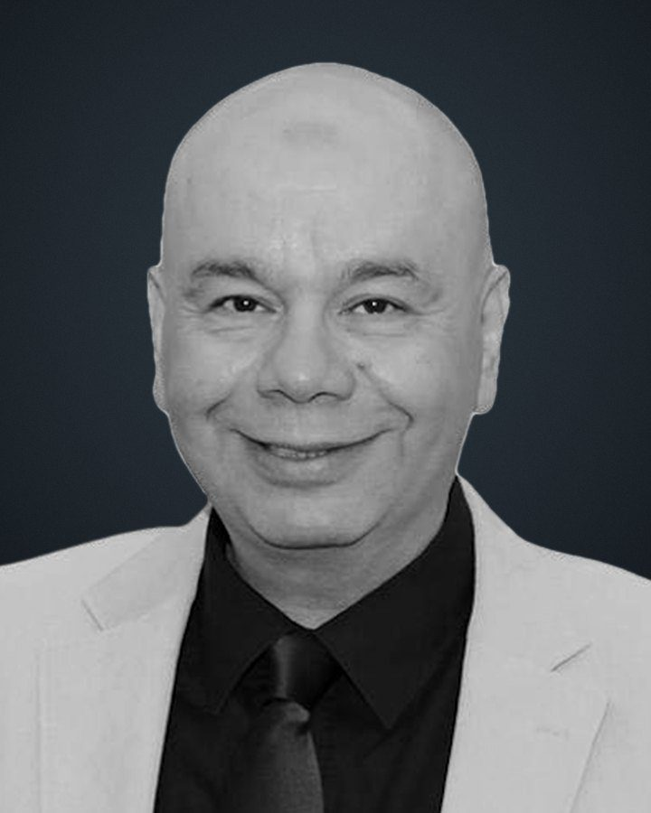
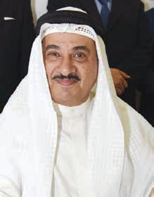
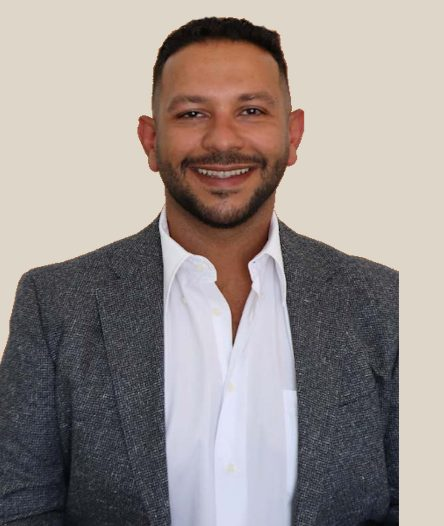

Waleed Al‑Qadoumi
Has worked in Kuwait's exhibition, conference, media and public relations industry since 1993. Co-founded TopExpo in 1998 and spoke for the group as Managing Director at KIPS 2015.
About TopExpo
An exhibition and conference organiser built around property, finance and the people who buy and sell it.

TopExpo Group was founded in Kuwait in 1998 by Waleed Al-Qadoumi and Sheikh Malek Al Sabah. Its first show, the Real Estate & Investment Exhibition, opened at the Regency Hotel that year.
The Kuwait International Property Show followed and became the group's main annual event. Its ninth edition, in November 2016, brought 60 companies and 250 projects to the fairground in Mishref.
Interiors, careers and specialist conferences filled out the calendar. Beyond Kuwait, the team built stands and pavilions and ran conferences in Bahrain, Qatar, the UAE, Saudi Arabia, Oman, Jordan and Egypt.
In November 2016 the group agreed with Informa Exhibitions to run RIE and KIPS as Cityscape Kuwait events. In May 2017 it took its format to Toronto.
TopExpo is part of Momac Holdings, alongside TREG Holdings, Gulf Bridge, Momac Energy and Trading and GBC Oil Trading.
People
Two founders in 1998. Later, a sales and business development lead who took the shows to Toronto.

Has worked in Kuwait's exhibition, conference, media and public relations industry since 1993. Co-founded TopExpo in 1998 and spoke for the group as Managing Director at KIPS 2015.

Co-founded TopExpo in 1998. As Chairman of Top Expo Group he announced the agreement with Informa Exhibitions in November 2016.

Executive Manager for Sales and Business Development across Top Real Estate Group and Top Expo from 2010 to 2017. Led the Canadian marketplace in Toronto. Today President of Momac Holdings.
Reach
Stands, pavilions and conferences in eight countries beyond Kuwait. Select a country to trace it on the map.
Sponsors, 2008–2017
Kuwaiti banks backed the shows and international developers exhibited at them.


Logos are shown as a historical record. Current relationships are not implied.
Group
Five companies under one holding: exhibitions, real estate, private investment and energy trading.
Tell us the sector, the city and roughly when. We answer every day, around the clock.